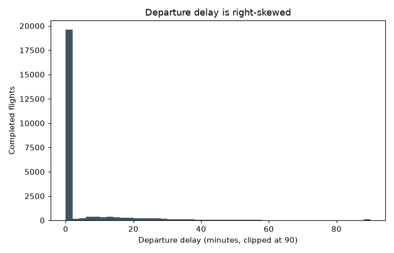

Northgate–Solmara
69.7% actual versus 70.3% expected. Its low raw result is largely consistent with being one of the network's longest routes.
Business questionAeroVista's punctuality got worse. Was this caused by a few exceptional events, or was there an underlying decline—and where should managers act first?
I analysed 25,204 scheduled flights across two years. “On time” means arriving no more than 15 minutes after schedule; cancellations are reported separately because the evidence shows they are a different operational problem.
Every headline figure below is across the Excel workbook, SQL queries and Python analysis.
Yes. The on-time arrival rate fell from 87.7% to 86.2%, and the fall remains after removing three major disruption periods.
No. Their increase almost disappears when one eight-day Turboprop grounding is removed.
Almost every cancellation came from an airline-controlled cause, and the schedule absorbs inbound delays only until its 15-minute cushion runs out.
After allowing for route and airport difficulty, Northgate–Bellhaven, Porthaven and Millbeck remain the clearest operational concerns.
Use two separate responses. Review network capacity for the underlying punctuality decline, but treat the cancellation rise as a concentrated fleet-maintenance episode. Then target the route, airports and aircraft rotations that still look weak after a fair comparison.
The share of flights arriving broadly on time fell over the two years covered by this data. Even after removing the three known bad-weather and grounding episodes from the numbers, the decline is still there — this is a genuine underlying trend, not one-off bad luck.
The share of flights cancelled rose over the same period. But once you take out an 8-day grounding of one aircraft type, that rise almost completely disappears — this is really a story about one fleet problem, not a general decline.
About half of all delay minutes come from things outside the airline's control, like weather and air-traffic congestion. Just under a third come from things the airline could fix directly, like crew and maintenance. The rest is delay inherited from a previous late flight.
Unlike delay, which is roughly half outside anyone's control, cancellations are overwhelmingly down to things inside the airline: maintenance issues, crew availability and ground handling. Weather barely features at all.
When a plane arrives late, the schedule has some slack built in to make up time before it flies again. Small delays get absorbed almost completely. It's only once a delay runs past about 15 minutes that it starts spilling over into the next flight, and once it's past an hour, nearly all of it carries through.
The five worst-performing routes for on-time arrival are all long-haul flights from the airline's busiest hub — no surprise, since longer flights pick up more weather and air-traffic delay along the way. Once that's accounted for, the single worst route on paper turns out to be almost entirely explained by its length. But one other route stood out as genuinely underperforming, worse than its own difficulty would predict.
The busiest hub airport has some of the highest average delays in the network. But once you account for how much traffic and complexity it handles, most of that delay is explained away — it's simply a very complex airport to run. Two much smaller, quieter airports show high delays that aren't explained by complexity at all, which makes them the more genuine concern.
Most disruption events are short or medium-haul flights, and together they account for most of the total cost simply because there are so many of them. But long-haul disruptions, while rare, cost far more each time — because compensation, rebooking and hotel costs all scale up with a much bigger number of passengers on board.
A fall in punctuality can require more network capacity, while a cancellation spike caused by one grounded fleet can require a targeted maintenance response. Treating both figures as one general “performance problem” would send management in the wrong direction.
The analysis therefore separated the questions: Is the punctuality decline still present after exceptional events are removed? What causes ordinary delay? When does lateness spread to the next flight? Which routes and airports still look weak after allowing for their difficulty? Where does passenger recovery spending concentrate?
| Coverage | 24 airports (3 major hubs, 8 regional, 9 small and 4 international), covering 55 routes |
|---|---|
| Period | January 2024 – December 2025 (24 months) |
| Fleet | 55 aircraft across 4 types (Regional Turboprop, 2 Narrowbody types and Widebody) |
| Scheduled flights | 25,204 (25,242 original rows; 38 duplicates removed during cleaning) |
| Delay-cause events | 5,743 (one row for each recorded delay cause linked to a flight) |
| Turnaround events | 12,275 (aircraft ground-turn records) |
| Passenger disruption records | 521 (cancellations plus long delays or diversions) |
| Airport-day weather and congestion records | 17,544 |
Excel made the calculations inspectable, SQL made them repeatable, Python handled the statistical comparisons and Power BI translated the result into a management-view design.
Delay minutes are split between outside conditions, airline-controlled problems and lateness inherited from an earlier flight. Cancellations are different: 99.4% are linked to airline-controlled causes in this dataset.
Delay and cancellation look like one reliability problem in a headline rate, but their causes—and available remedies—are different.
Separate network resilience work from maintenance, crew and ground-handling actions.
An aircraft arriving late does not automatically make its next flight late. Ground teams can shorten part of the planned turnaround, but once that spare time is used up, the remaining delay carries forward.
Knowing when lateness starts to spread identifies the operational threshold at which local delay becomes a network problem.
Prioritise rotation protection and recovery resources once inbound lateness exceeds the available turnaround cushion.
The interactive chart above (Headline Numbers) shows the worst 15 routes by raw on-time performance next to what their own distance, haul type and congestion profile would predict. The table below names the specific outliers.
| Route / Airport | Raw position | Case-mix result | Interpretation |
|---|---|---|---|
| Northgate–Solmara-Vantage | Worst raw OTP (69.67%) | −0.65pp gap | Mostly explained by being a very long route (6,223.8km) — one of the network's longest |
| Northgate–Bellhaven Intl | 3rd-worst raw OTP (72.25%) | −5.46pp gap (worst in the network) | A genuine outlier — not explained by distance, haul type or congestion |
| Northgate International (airport) | 2nd-highest raw delay | Drops to 8th once adjusted | Mostly explained by being the network's busiest, most complex hub (6,254 flights) |
| Porthaven & Millbeck (airports) | 1st & 2nd highest raw delay | Stay 1st & 2nd once adjusted | Not explained by complexity — genuine operational review warranted |
Longer routes and busier airports naturally face more opportunities for weather and air-traffic delay. I therefore compared each result with the performance expected for its distance, haul type and congestion. The gap between actual and expected performance shows where difficulty does—and does not—explain the raw result.
Raw route rankings can mistake distance and airport congestion for an avoidable operational failure.
Identify routes and airports whose shortfall remains unusually large after accounting for operating difficulty.
69.7% actual versus 70.3% expected. Its low raw result is largely consistent with being one of the network's longest routes.
72.3% actual versus 77.7% expected. The 5.5-point shortfall is the largest unexplained route gap.
Its delay ranking falls from 2nd to 8th after allowing for its traffic and complexity.
They remain 1st and 2nd for average delay after the complexity adjustment.
Use this as a screening tool. The route model explains only a modest share of the differences and the airport model explains very little, so these results identify where to investigate rather than proving a cause.
The total bill and the cost of an individual disruption answer different questions. Medium-haul creates the largest overall bill because there are many events. Long-haul events are rare, but each one is far more expensive.
Total cost shows where the budget is consumed; cost per event shows where one failure carries the greatest exposure.
Balance broad medium-haul prevention with contingency planning for rare, high-cost long-haul disruption.

Source files for this project are organised as shown below (not yet published to a public GitHub repository). Every deliverable reconciles to the same figures shown on this page.
See also: 08_outputs/executive_summary/ for the full written analysis and 09_case_study/portfolio_case_study.md for the source of this page.